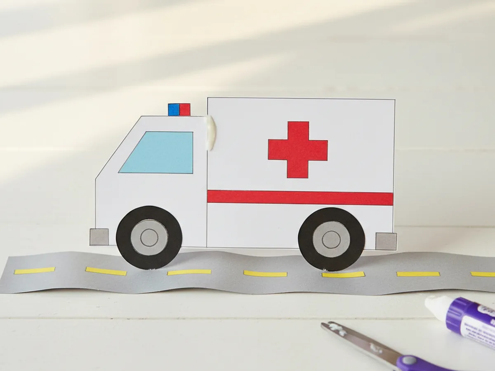
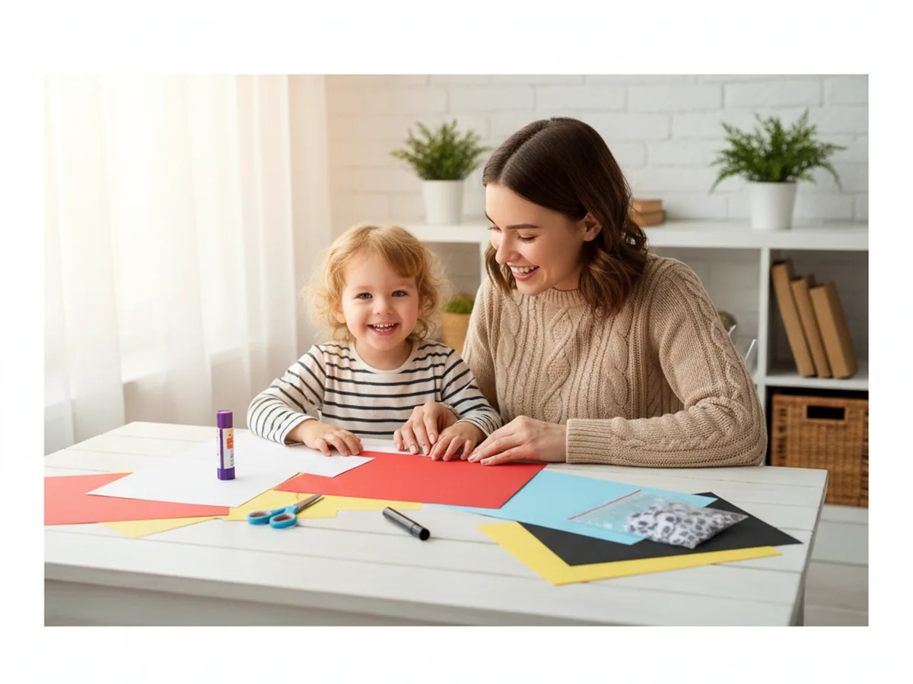
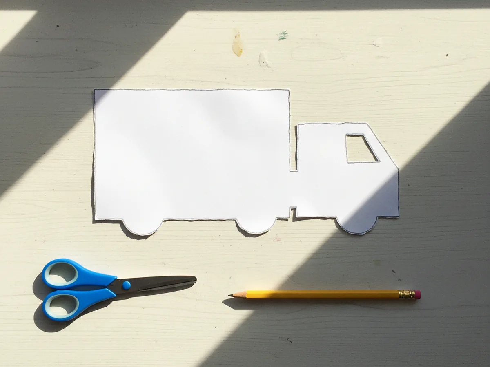
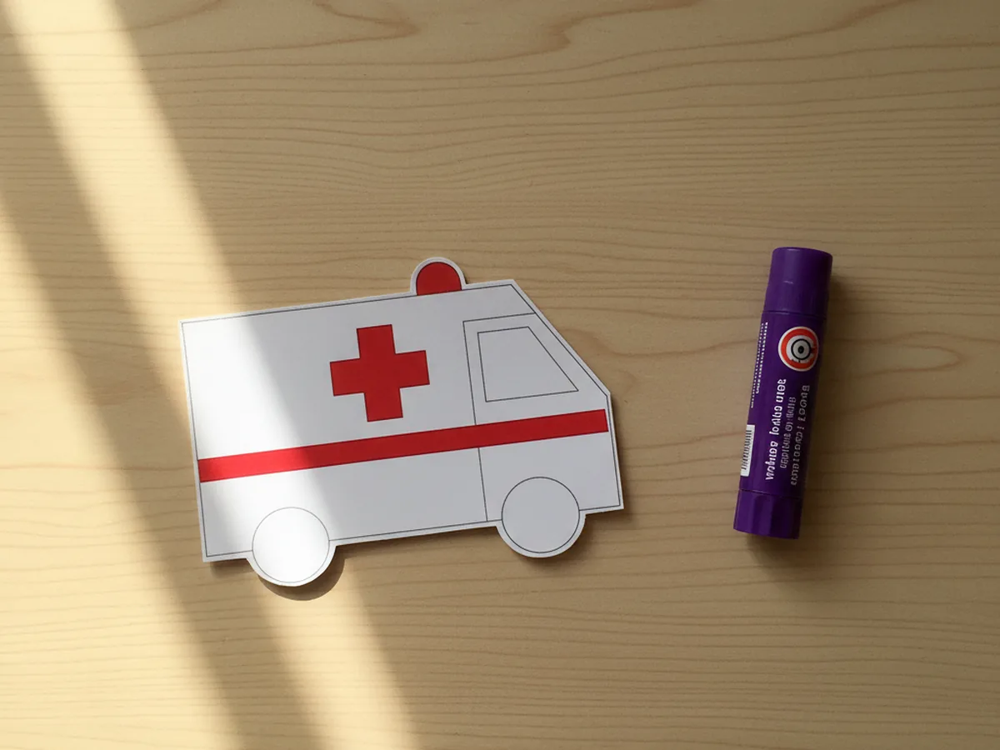
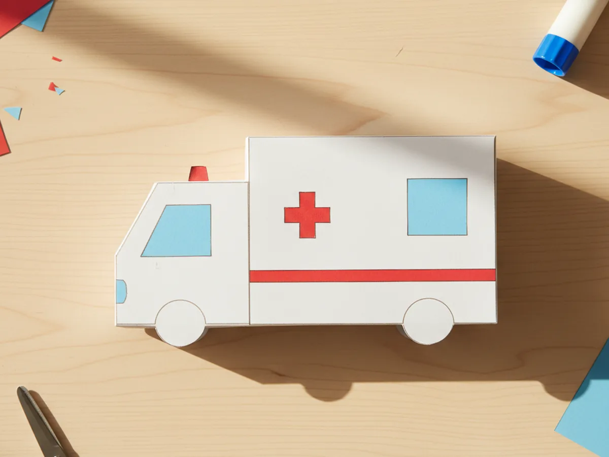
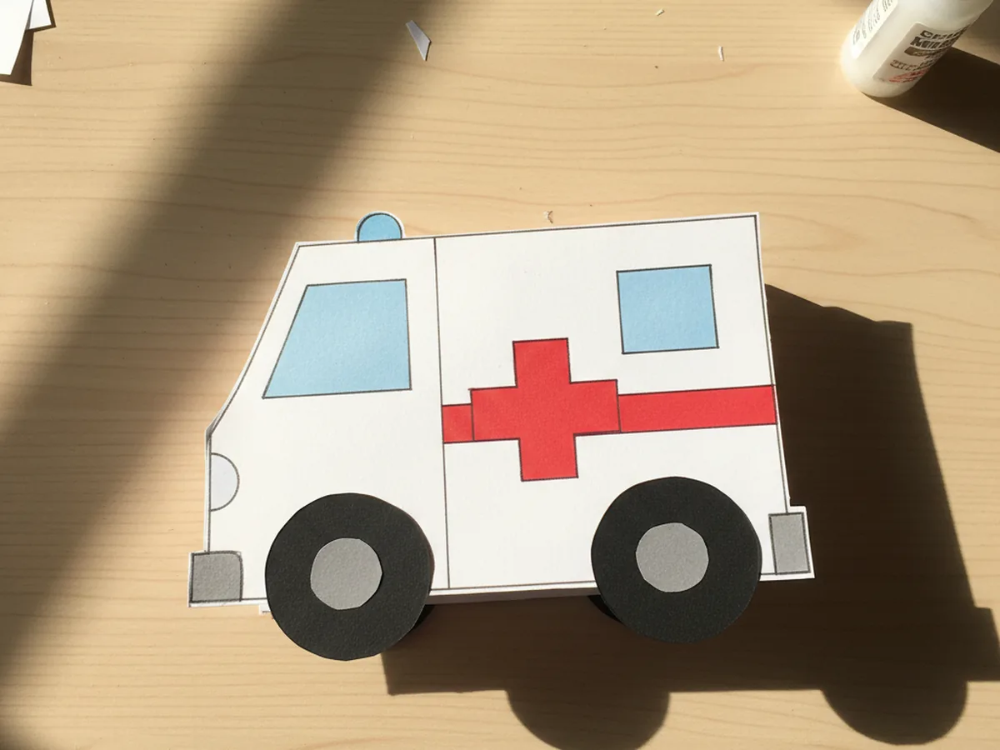
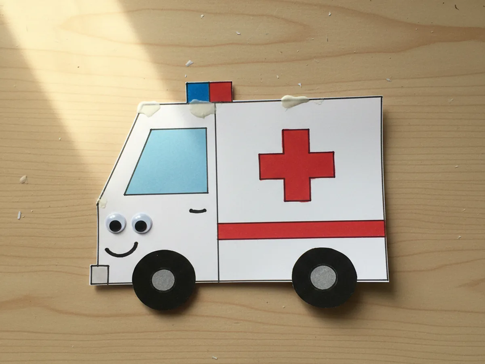
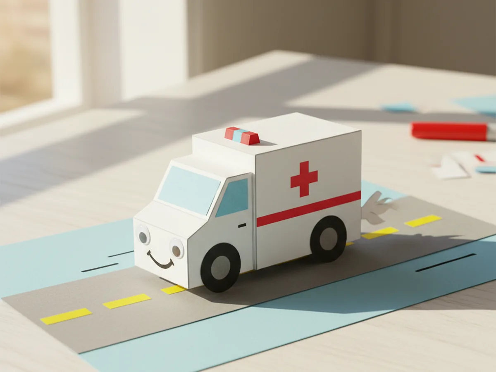

If your little one is in that sweet stage where every siren makes them point at the window and shout "ambulance!", you are going to love today's project. This paper craft ambulance is a gentle, beginner-friendly emergency vehicle made from a handful of simple shapes you probably already have in the craft drawer. In about twenty-five minutes you will have a cute little ambulance ready to roll across the coffee table, the rug, or right onto a homemade paper road. 🚑
What I love most about this easy paper ambulance craft is how forgiving it is. Wobbly wheels still look adorable. A slightly crooked red cross just gives the ambulance more character. If your child is just starting to handle scissors and glue, this is the perfect low-stress craft for a cozy afternoon together.
Why Kids Love This Craft
Children adore making a paper craft ambulance because emergency vehicles are exciting to little ones in a way grown-ups sometimes forget. The flashing lights, the loud siren, the people inside helping others, all of that turns this simple paper project into a small storytelling adventure. By the time the wheels go on, your child is usually already making siren sounds and pretending to drive it down the hallway.
This simple ambulance paper craft is also wonderful for building real fine motor skills. Cutting straight edges teaches your child to guide the paper steadily with one hand while snipping with the other. Gluing the small red cross and the tiny windows builds finger precision, and lining up the wheels under the body develops the early sense of spatial awareness that will help them later with puzzles, writing, and tying shoes.
Then there is the moment that makes the whole project worth it. As soon as the siren lights go on top, the ambulance suddenly looks real. Your child will start naming it, parking it, racing it across the table, and inventing little rescue missions. That stretch of imaginative play is what turns this kids ambulance craft into a sweet shared moment instead of just a quick activity. 💛

What You'll Need
Here is everything you need to make this paper craft ambulance at home. I always lay all the supplies out on the table first so my little one can sit down and dive right in without any waiting.
- Crayola Construction Paper (240 sheets, 12 colors), the perfect set with white for the body, red for the cross, light blue for the windows, black for the wheels, and yellow for the road line.
- Elmer's Disappearing Purple Glue Sticks (30 pack), washable and easy for tiny fingers to twist up and apply cleanly.
- Fiskars 5 inch Blunt Tip Kids Scissors, the right safe size for snipping the straight edges of this craft.
- Crayola Broad Line Markers (10 classic colors), for drawing the driver, the door handle, and tiny details like speed lines on the road.
- Googly Wiggle Eyes Self Adhesive (500 pcs assorted), optional but lovely for giving the front of the ambulance a sweet pair of headlight eyes in seconds.
- A pencil for sketching the body and window outlines and a piece of cardstock or scrap paper to display the finished ambulance on a road scene.
Step-by-Step Instructions
This paper craft ambulance walks through six gentle steps that flow naturally from cutting to gluing to scene building. Take your time and let your child do as much as they comfortably can.
Step 1: Cut the Ambulance Body
Start by lightly sketching a large rectangle on white construction paper, about the width of your child's open hand, for the main back box of the ambulance. Then sketch a smaller square on the same white sheet for the front cab where the driver sits. Cut both shapes out with kid scissors and lay them side by side on the table so the rectangle and square form one long ambulance silhouette. The lines do not need to be perfect, soft edges still look beautifully ambulance-shaped.

Step 2: Add the Red Cross and Stripe
From a sheet of red construction paper, cut a small red cross by snipping two thin rectangles and gluing them across each other in a plus shape, roughly the size of a quarter. Then cut one long thin red rectangle the same width as the ambulance body for a stripe along the side. Glue the red cross in the center of the back box and the red stripe just under it. Press both pieces down gently with a flat hand so they stick neatly to the white paper.

Step 3: Glue the Windows
From a sheet of light blue construction paper, cut a small square or rounded rectangle for the windshield on the front cab and a slightly smaller square for the back window of the ambulance. Glue the larger window onto the top half of the white square cab, then glue the smaller window onto the back box near the top. Suddenly the shapes start to look like a real little ambulance with a driver's seat and a back area for the helpers inside.

Step 4: Add the Wheels
From a sheet of black construction paper, cut two circles about the size of a bottle cap for the wheels. If you have a little spare grey or silver paper, cut two smaller circles to glue inside the black wheels as the hubcaps. Glue one wheel just under the front cab and the other just under the back box, letting the bottom of each wheel peek slightly below the body of the ambulance so it looks ready to roll. Press each wheel down firmly for a few seconds.

Step 5: Add the Siren Lights
From the red and blue construction paper, cut two small rectangles about the size of a postage stamp. Glue them side by side on the very top of the back box of the ambulance so they look like a small siren light bar. If your child wants to add even more personality, peel two small googly eyes and stick them onto the front of the cab as little headlight eyes. Use a black marker to draw a friendly smile under the windshield so the ambulance has a sweet face.

Step 6: Build the Road Scene
Cut a long thin strip of grey construction paper a bit wider than the ambulance for the road, and glue it onto a piece of white or pale blue cardstock. Snip a few tiny yellow rectangles and glue them in a dashed line down the middle of the road. Then glue the finished ambulance right on top of the road so it looks like it is racing to help. Use a black marker to add tiny speed lines behind the ambulance and a little exhaust puff at the back. Your paper craft ambulance is finished and ready to show off. ✨

Variations to Try
Fire Truck Version: Swap the white body for a bright red rectangle, skip the red cross, and add a long thin black ladder cut from black paper along the top instead. Same simple shapes, brand new emergency vehicle for your child's growing rescue fleet.
Pop-Up Get Well Card: Mount the ambulance and road onto a folded sheet of pastel cardstock so the ambulance pops out when the card is opened. Write a sweet "Feel Better Soon" message inside, perfect for a friend, grandparent, or sibling who is under the weather.
3D Standing Ambulance: Make the ambulance on a slightly larger scale, then glue a folded paper tab to the back so it can stand up on the table on its own. Add a second matching ambulance and let your child set up a whole emergency station scene with paper houses and trees.
Final Thoughts
This paper craft ambulance is one of those quiet little projects that asks for almost nothing in supplies and gives back the brightest happy smile from your child. The cutting, gluing, and scene building all unfold at such a gentle pace, which makes it a wonderful rainy afternoon activity, a sweet pairing with a community helpers storybook, or a fun follow-up after a visit from the local fire station.
If your child finishes their first paper ambulance, save this article on Pinterest so other craft-loving mamas can find it easily. Happy crafting! 🚨
More Crafts You'll Love
If your child loved this paper craft ambulance, they will adore these other simple vehicle projects too: